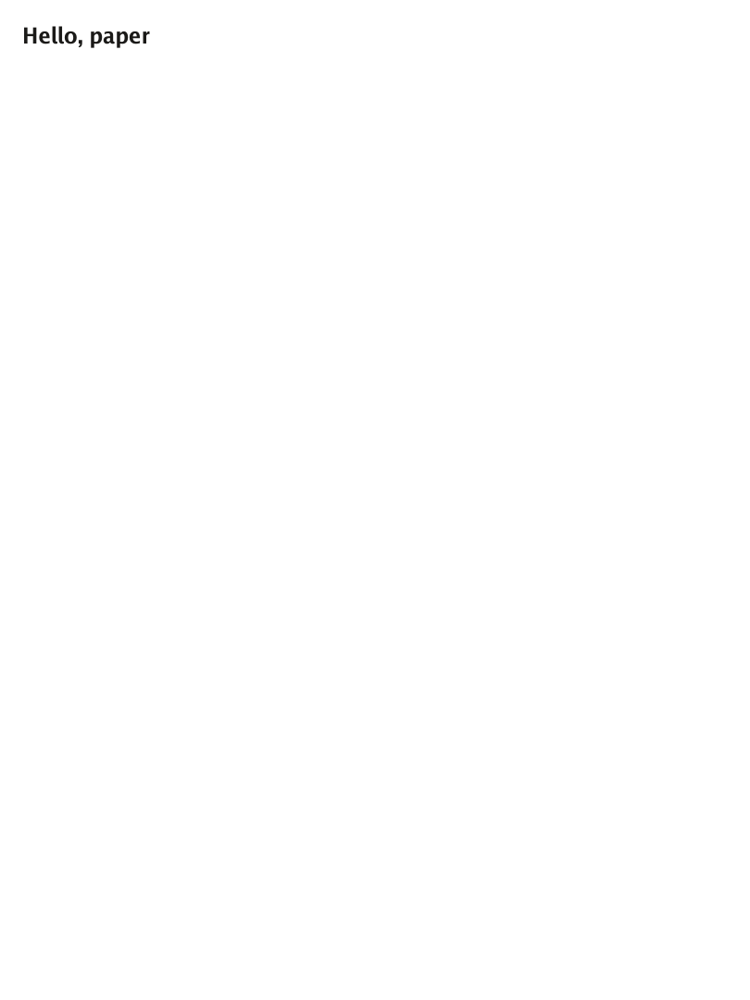
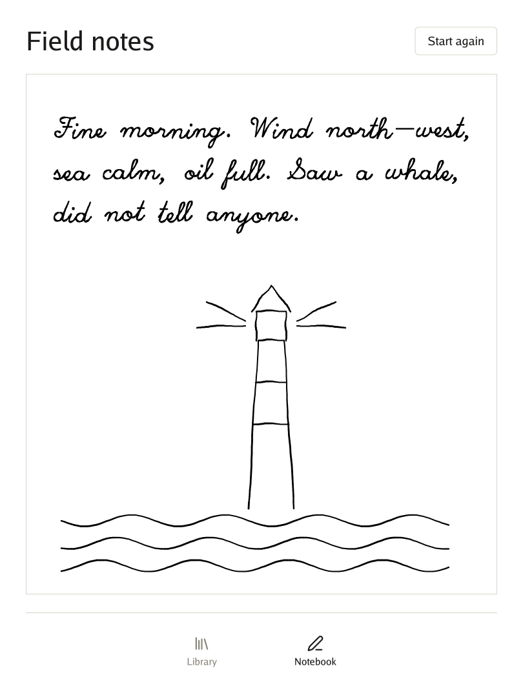
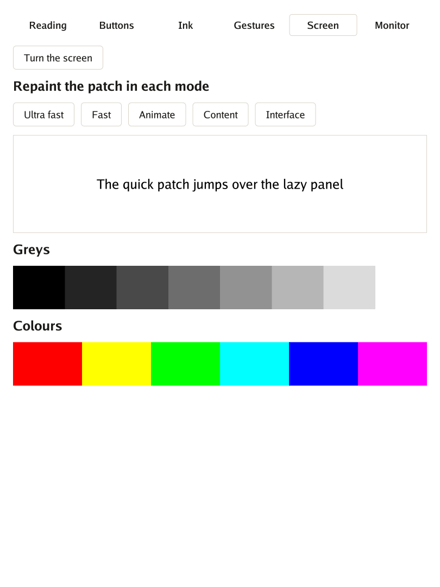

Put a Go program on a reMarkable Paper Pro, one level at a time. Each level teaches one piece of Go for reMarkable and ends with a program you open on the tablet.
We start by making the tablet ready, then put words on paper, count presses of a button without wasting a refresh, write with the pen, and finally turn the tablet and watch the interface follow.
Every level has the same shape: the idea, the code, and a checkpoint to know it works.
You need:
| Why | Where | |
|---|---|---|
| Go 1.26 or later | The compiler; it builds for the tablet by itself | go.dev |
| A reMarkable Paper Pro in developer mode, and a USB-C cable | Where it runs | The tablet’s settings |
| xovi and AppLoad | They list and open programs | xovi, AppLoad |
Clone the repository; Go fetches Go UI and Go Renderer by itself.
git clone https://github.com/akrck02/go-remarkable
cd go-remarkable
⚠️ This is your tablet, at your own risk. Follow xovi’s and AppLoad’s own instructions, for exactly your version of the tablet’s software. Nothing here writes to the system partition, so leaving is a restart away: xovi stops, and the tablet is as it was.
Each time you restart the tablet, xovi is off. Over SSH (ssh root@10.11.99.1), start it like this:
systemctl mask --runtime rm-emergency.service
systemctl show rm-emergency.service -p LoadState # must say LoadState=masked; if not, stop here
systemctl reset-failed xochitl
/home/root/xovi/start
The first line matters. If the tablet’s own program fails while xovi is starting, the system’s
reaction is an emergency restart. --runtime turns that reaction off only until the next restart.
✅ Checkpoint: after half a minute the tablet shows its usual screen, and AppLoad is in the side menu.
The idea. AppLoad is a shelf. It looks in a folder for programs, and each one comes with a small
label, external.manifest.json, that gives its name. When you open one, AppLoad hands it a piece of
screen, and the program paints it.
The code. A program only has to say how to draw itself. This is the heart of cmd/hello/main.go:
func newProgram(app.Device) app.Program {
return app.Program{Draw: draw}
}
func draw(context *ui.Context) {
context.Box(ui.Layout{Width: ui.Grow(), Height: ui.Grow(), Padding: ui.Pad(marginInLayoutPixels)}, func() {
context.Heading("Hello, paper")
})
}
main only calls app.Run(newProgram). Build it and send it over:
tools/build.sh ./cmd/hello # prints out/hello
tools/install.sh out/hello # prints installed hello on root@10.11.99.1
Reload AppLoad’s list and open Hello, paper.

✅ Checkpoint: the words are on the panel, and they stay there with the program asleep.
🏅 Achievement: first ink, without a pen.
The idea. A phone repaints sixty times a second and nobody minds. E-ink pays for every change,
with time and with ghosts of the old picture. So the program sleeps until something happens, and it
sends only the pixels that changed. Go UI’s usual button also darkens while it is held. On paper that
is a whole extra refresh before anything has happened, so paper.Button keeps one look.
The code, from cmd/counter/main.go:
func (shown *counter) draw(context *ui.Context) {
context.Box(ui.Layout{Direction: ui.Vertical, Width: ui.Grow(), Height: ui.Grow(), Padding: ui.Pad(marginInLayoutPixels), Gap: gapInLayoutPixels}, func() {
context.Heading(fmt.Sprintf("Pressed %d times", shown.count))
if paper.Button(context, addButtonName) {
shown.count++
}
})
}
tools/build.sh ./cmd/counter && tools/install.sh out/counter
✅ Checkpoint: each press changes the number, once. Nothing flashes while your finger is down.
You can prove it with no tablet at all. apptest replaces AppLoad with a stand-in that remembers what
it was asked, and cmd/counter/main_test.go checks that a press costs exactly one refresh:
go test ./cmd/counter
🏅 Achievement: thrifty painter.
The idea. Building a whole interface for each point of a pen would be far too slow for
handwriting. So ink.Surface takes the pen away from the interface and paints straight on the canvas,
in the fastest refresh mode. When the pen rests for two seconds, the lines get one clean refresh.
Your palm can rest on the panel meanwhile: while the pen writes, touches are ignored.
AppLoad does not tell a program how hard you press, so pen reads the pen’s own device, without
taking it away from the system.
The code, from cmd/notebook/main.go. The program makes the paper, shows it, and tells the loop
that it has one:
func (shown *notebook) draw(context *ui.Context) {
context.Box(ui.Layout{Direction: ui.Vertical, Width: ui.Grow(), Height: ui.Grow(), Padding: ui.Pad(marginInLayoutPixels), Gap: gapInLayoutPixels}, func() {
if paper.Button(context, clearButtonName) {
shown.page.Clear()
}
shown.page.DrawPaper(context)
})
}
func newProgram(device app.Device) app.Program {
shown := ¬ebook{page: device.NewInk()}
return app.Program{Draw: shown.draw, Ink: shown.page}
}
tools/build.sh ./cmd/notebook && tools/install.sh out/notebook

✅ Checkpoint: the line follows the tip. Press harder and it gets wider. Turn the pen over, and a band shows what the eraser is about to remove; lift it and that part is gone.
🏅 Achievement: pen pal.
The idea. The tablet already knows which way up it is. AppLoad passes that on, if the program says in its label that it can turn:
{
"name": "Notebook",
"application": "notebook",
"qtfb": true,
"supportsRotation": true
}
There is nothing to add to the code: app turns the canvas, the pen and the fingers, and the strokes
stay where they are on the panel.
One catch is easy to miss. AppLoad opens a program in a window, and a window turns only with its own button. Only in full screen does it follow the tablet.
✅ Checkpoint: open the notebook, press AppLoad’s full-screen button, and turn the tablet each way. The button moves to the new top, and taps still land on it.
🏅 Achievement: right way up, whichever that is.
The idea. cmd/demo is a test bench with one screen for each thing the tablet can do: reading,
buttons, ink, gestures, the panel’s refresh modes, and a monitor of every event. It is also the example
to read for the rest of app.Program: RefreshMode picks how each frame reaches the panel, InkOpen
says when the paper is on screen, and OnEvent sees everything first.
tools/build.sh ./cmd/demo && tools/install.sh out/demo

✅ Checkpoint: on Screen, press each mode and compare what the patch leaves behind.
🏅 Achievement: knows the panel by heart.
Copy cmd/counter to cmd/<your-program>, change application in the manifest to that same folder
name, and draw something of your own. For what an interface for paper can look like, read
cmd/library: a shelf, a page that stays still until it is turned, and a notebook, with real prints
for covers and nothing that moves. Before you do anything long, read
before writing a larger program.